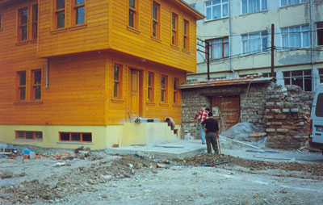
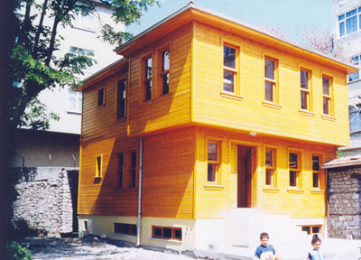
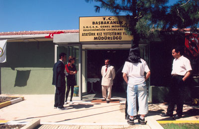
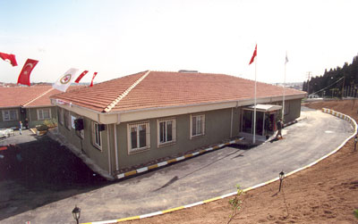

Tarihçemiz
Vakfımızın Özgeçmişi
-

Vakfımız, 1997‘de kuruldu. 1998 Fatih Belediyesi ile yaptığımız protokol çerçevesinde 10 yıllığına bağış olarak aldığımız Edirnekapı Sarmaşık tekkesi restorasyonuna başlandı. 30 çocuğumuzun barınabileceği bahçe içindeki tarihi eser evimizin yapımı tamamlandı.
-

1999 Sosyal Hizmetler ve Çocuk Esirgeme Kurumu’yla yaptığımız protokol çerçevesinde korunmaya muhtaç, sokağa itilmiş, çocuklarımız alınarak evimize yerleştirildi. Böylece, 7-12 yaş, 30 erkek çocuk kapasiteli ilk evimizi açmış olduk.
-

2001, Bahçelievler Belediyesinin vakfımıza bağışladığı araziye 13-18 yaş grubu, 50 kız çocuğu için, modern şartlarda yaşayabilecekleri, içinde banyosu ve mutfağı olan, ikili ve dörtlü odalar şeklinde inşa ettirdiğimiz Geleceğimizin Çocukları Vakfı, Atatürk Kız Yetiştirme Yurdu’nu açtık.
-

2002, Küçükçekmece Belediyesi’nin vakfımıza bağışlamış olduğu araziye, 13-18 yaş, 70 erkek çocuk kapasiteli, Halkalı Erkek Yetiştirme Yurdu'nu açtık. Daha detaylı bilgi için ‘Neler yaptık’ bölümüne bakınız.